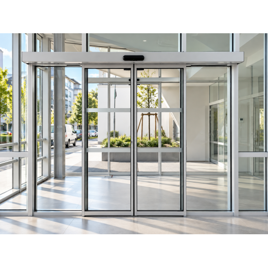
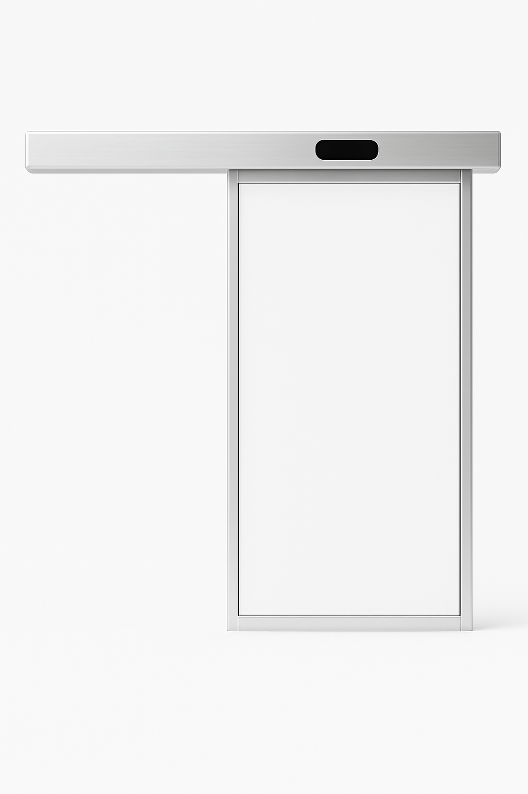
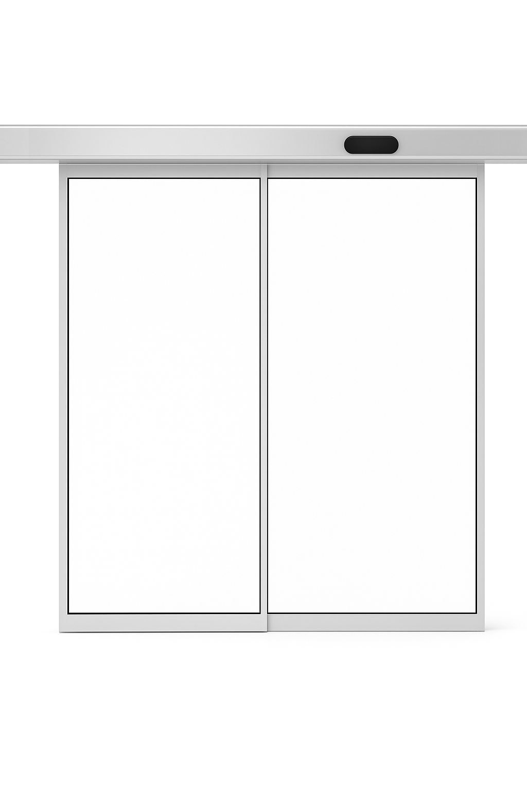
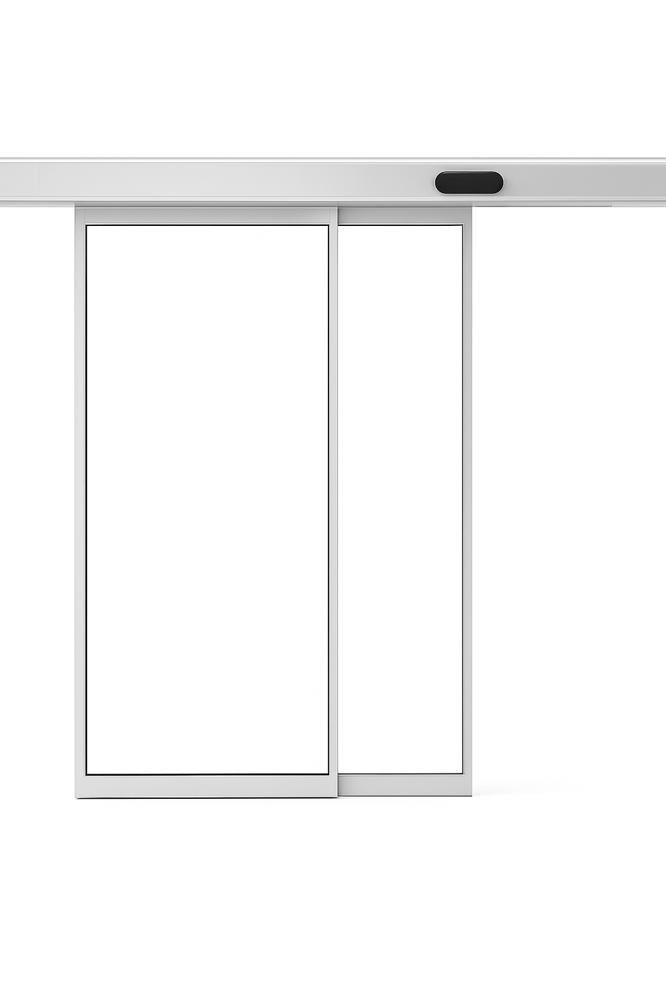

Portes automatiques coulissantes
1 vantail, 2 vantaux ou télescopique : des portes piétonnes coulissantes fabriquées sur mesure, pré-câblées et prêtes à poser, produites en 12 jours dans notre atelier en Isère.

Trouvez la configuration adaptée à votre passage.
Trois architectures, une même motorisation et la même logique d'installation.

Un vantail
Porte automatique coulissante 1 vantail
Conçue pour les passages où l'espace disponible est limité. Fabriquée sur mesure dans notre atelier et livrée pré-câblée, prête à être installée.

Deux vantaux
Porte automatique coulissante 2 vantaux
Pour un passage large, fluide et confortable. Idéale pour les zones à fort trafic et les entrées professionnelles, elle allie performance, esthétique et sécurité.

Télescopique
Porte automatique coulissante télescopique
Solution optimale pour les espaces restreints nécessitant un large passage. Le système télescopique réduit l'encombrement au sol tout en offrant un passage généreux — idéal pour les hôpitaux, centres commerciaux et bâtiments publics.
Disponible décembre 2026
| Caractéristique | 1 vantail | 2 vantaux | Télescopique |
|---|---|---|---|
| Passage | 600 – 1 200 mm | 1 200 – 2 400 mm | Sur mesure |
| Idéal pour | Petit passage | Passage standard | Espace contraint |
| Fabrication | 12 j | 12 j | Sur demande |
| Configurable en ligne | ✓ | ✓ | — |
Détecteurs de sécurité, ouverture sans contact, finitions et laquage RAL, vitrage sur mesure : toutes les options se configurent directement dans le configurateur.
Notre équipe technique vous accompagne dans le choix de la porte adaptée à votre projet.